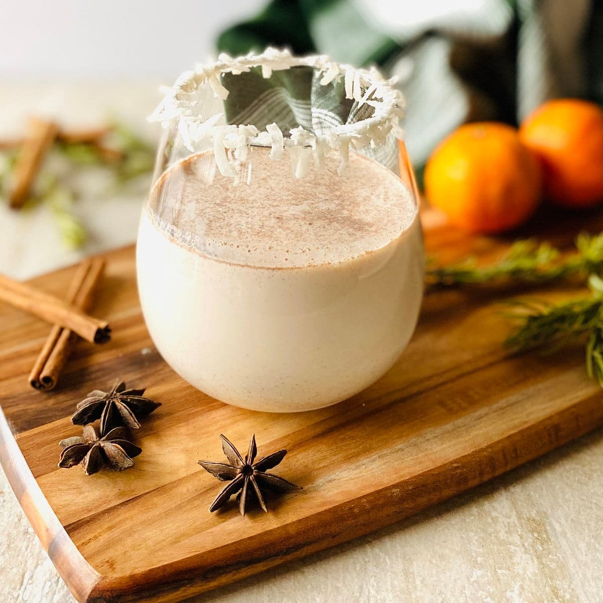

Conquito

Coquito is a creamy Puerto Rican holiday cocktail made with coconut, rum, cinnamon, nutmeg, and more. This easy family recipe has been passed down through the generations. It’s so good you won’t want to share!
Ingredients
- Rum: A light rum, like Bacardi Superior or Don Q Cristal is the traditional choice. However, if you like a dark aged rum, it is also delicious and will boost the flavors of vanilla, cinnamon, and nutmeg. You can even use coconut rum if you prefer.
- Cinnamon: You’ll need both cinnamon sticks and ground cinnamon.
- Sweetened Condensed Milk
- Cream of Coconut: Cream of coconut is sold under a few different names. Goya makes one, but we prefer Coco Lopez.
- Coconut Milk: Get canned coconut milk with a thick layer of cream on top. I prefer the Badia brand of coconut milk as it almost always has a thick layer.
- Evaporated Milk: You can also use extra coconut milk instead, but we like the final flavor we get when we use evaporated milk.
- Ground Nutmeg: Freshly grated nutmeg will add the most flavor. I use a microplane grater to grate whole nutmeg.
- Vanilla Extract
- Shredded Coconut: While not traditional, a little shredded coconut adds more coconut flavor. You can use sweetened or unsweetened coconut.
How to Make Coquito Step-By-Step
- Flavor your rum with cinnamon (do this in advance). To start, we like to soak our rum with cinnamon sticks and raisins (if you are using them) for 24 hours (or up to a week). This is optional but really helps to give your coquito a great depth of flavor.
- Blend everything together. Then we gather all the rest of our ingredients and puree them all together in a blender. So you’ll add the coconut milk, sweetened condensed milk, evaporated milk, cream of coconut, vanilla extract, shredded coconut (optional), ground cinnamon, and nutmeg.
- Add the rum. Once everything is pureed, pour the coconut milk mixture into the bottle with the rum (and optional rum raisins) and shake well to combine.
- Chill. Chill the coquito for at least 4 hours before serving. This will help to thicken the coquito, but will also help the flavors meld together.
- Serve! Pour your chilled coquito into cocktail glasses. You can add a coconut rim before pouring your coquito if you like. Sprinkle some extra ground cinnamon or nutmeg on top, then start sipping.